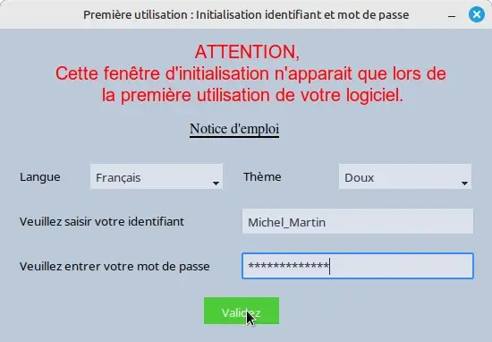
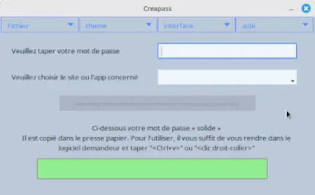
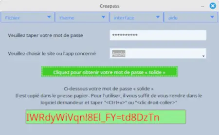
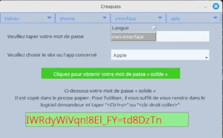

Notice d'emploi - Creapass
Générateur de mots de passe aléatoires reproductibles et autonome

Générateur de mots de passe aléatoires reproductibles et autonome
Lorsque vous lancez Creapass pour la première fois, vous allez voir cette fenêtre :

Figure 1 : Fenêtre d'initialisation
Le logiciel a été conçu pour être utilisé sans la souris (c'est plus facile et plus rapide mais la souris demeure). La zone en service est entourée d'un cadre bleu, l'appui sur la touche « Entrée » valide et passe automatiquement à la zone suivante.
ATTENTION : Votre identifiant et votre mot de passe sont enregistrés sous forme codée (empreinte numérique). Il est donc IMPÉRATIF DE VOUS EN SOUVENIR car ils ne peuvent pas être récupérés.
→ Consultez nos conseils pour choisir un bon identifiant et mot de passe ←
Après avoir entré ces données, la fenêtre devient :

Figure 2 : Validation de l'initialisation
Après l'initialisation, cette fenêtre apparaîtra au démarrage :

Figure 3 : Fenêtre principale
Vous devez saisir votre mot de passe pour accéder aux fonctionnalités. Ensuite :

Figure 4 : Mot de passe généré
Pour une utilisation plus discrète, activez la mini-interface via le menu.
Attention, cette option du menu n'est accessible qu'après validation du mot de passe.

Figure 5 : Activation de la mini-interface
La mini-interface apparaît alors, ainsi qu'une icône dans la zone à côté de l'horloge :
Un clic droit sur l'icône fait apparaître un menu

Figure 6 : Mini-interface

Figure 8 : Icône côté horloge : 1-au repos, 2-au survol, 3-au clic droit
Si vous devez déplacer cette fenêtre, appuyez sur « Alt-m » pour avoir la traditionnelle barre-système

Figure 6 : Mini-interface déplaçable
Astuce : Après choix du site, appuyez sur Entrée pour générer un mot de passe, puis à nouveau Entrée pour effacer et préparer une nouvelle génération.
Si vous avez choisi d'ouvrir directement sous la forme réduite, votre mot de passe vous est demandé.
Attention,Ça suppose que vous maîtrisez le logiciel et que c'est votre mode travail courant ; vous n'aurez plus accès aux options « langue » et « thème »